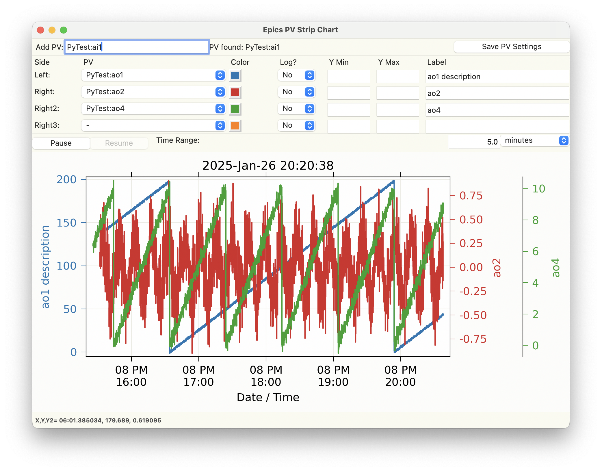

Strip Chart Display¶
StripChart is a GUI application for viewing the time series of PVs as a strip chart. It feature interactive graphics, with click-and-drag zooming, updating the plotted time range, saving figures as high-quality PNGs, and saving data to ASCII files. Stripchart is inspired somewhat by the classic Epics Stripchart application written with X/Motif, but has many differences.
Running Stripchart¶
To run the Stripchart application from the command line, use:
epicsapps stripchart
A sample display would look like this:
Usage¶
To use, Add PVs to be monitored in the upper left entry. Once that PV connects, it will be added to the drop-down menus for each of the 4 available traces. Colors, Y-ranges, and descriptions (used for the Y-axis labels) can be altered. To save these settings for a PV, press “Save PV Settings” in the upper right.
The time range (in time from the present) can be adjusted on the right-hand side, just above the plot.
The “Pause” and “Resume” buttons pause and then resumes the plotting of new values so that you can zoom in on parts of the plot using Left-Down and Drag.
Note that data collection of new values will still happen while the plot is paused, and resuming the plotting will show the most recent data.
From the “File” Menu, you can save plain text files with the time series data for all monitored PVs, or save a PNG image of the plot. With the mouse over the plot window, Control-C will also copy the PNG image to the clipboard.
You can also configure the plot from the “Options” menu.